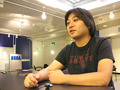

瀬上さんは、いつからソニックチームのサウンドを手掛けられるようになったのですか？
セガに入った年にメガドライブの『ソニック3』、『ソニック＆ナックルズ』向けにも何曲か作りました。
あとは海外向けにジェネシス版（メガドライブ）で
リリースした『ソニック 3Ｄ ブラスト』でも半分くらいは曲を作ったと思います。
サウンドディレクターとして、メインコンポーザーとして、
全体的に携わるようになったのは『ソニックアドベンチャー』からですね。
ゲームサウンドとは、どのようにして作られているのですか？
ケースバイケースですね。
ゲームの詳細が決まっていない段階に
イメージ先行で作るときもありますし、
ゲームを作っている途中の過程を見て
イメージが湧くときもあります。
だいたいパッと浮かんだ第一印象の音を
自分でうまくキャッチ出来ると、スムーズに仕上げられますね。
ゲームがほぼ最終的に仕上がっている段階で作るとなると、
作りやすくはあるけれど、
こちらからのフィードバックが
反映されにくいというのも事実なので
個人的には途中の段階から一緒に作り上げていく方法が好きですね。
一番大事に考えているテンポ感を、曲の方からもゲームに積極的にアプローチ出来ますし。
各ソニックタイトルでは、それぞれどんなことを重視してサウンドを作られたのでしょうか？
メガドライブで最初に関わった『ソニック3』『ソニック＆ナックルズ』は、曲を作って提出して、
当時、やはりサンフランシスコ郊外で作業をしていた開発チームの方に、
いっぱいある候補曲の中から選んでもらったんですが、
雰囲気のキーワードだけが書かれた楽曲リストだけが頼りだったんですよ。
やっぱり覚えやすいこと、印象強いこと、ですかね。
その次の海外向けの『ソニック3Dブラスト』では、
やはりそれまでのメガドライブのソニックタイトルで培ってきた路線を
踏襲することに重点を置いた気がしますね。
『ソニックアドベンチャー』で、
初めて全体の舵取りを含めた役回りになりました。
それまでの場合、メガドライブ系のソニックと、
『ソニックCD』～『ソニックR』のようなハウス～ダンス系の2通りの音楽性の流れがあったと思うんです。
で、やっぱりココは完全に3Dになるとか、コンソールが変わるとか、
色々な意味でソニックにとっても大きなターニングポイントだったので、
音楽性もデカく変えようと。
自分が呼ばれたのは、そういうことに違いないと。（笑）
『ソニックアドベンチャー』
L.A. レコーディングのオフショットで、メインとなるところはロックという柱を立てて、
それを前面に押し出しつつも、
ゲーム全体のバラエティさ、
ストーリー展開を考えたところでは、
「一歩引いてシーンを盛り立てるには？」
という観点で肝となる印象的な曲を
用意出来たと思いますね。
この作品では、
僕を含めて3人が絡み合って作業をしたんですが、
お互いのインプットも大きかったですしね。
『ソニックアドベンチャー2』は、
前作で作った下地を元に、更に押し進めようとした感じでしたね。
キャラクターが入り乱れる構成だったので、
キャラクター毎に音楽性を立てて、ナックルズにはラップ系を入れたりしてね。
で、音楽性からキャラクターを表現するようなことを狙いました。
僕は基本的に自分の曲は自分でアレンジして、
自分も演奏するし、他のミュージシャンにも自分で指示を出すんですが、
僕以外のスタッフが担当した楽曲は、
アレンジから録りまでをニューヨークでやったものが結構多かったんです。
これがまた凄くて。
かなり劇的に変化したんで、あの衝撃はデカかったですよ。
言ってみれば、曲がね…呼吸してるんですよ。
完成度がドーンとアップしましたもん。
"Live & Learn"（『ソニックアドベンチャー2』メインテーマ曲）は最初からボーカル曲として作ったんじゃなくて、
PSOに入れる体験版を急に作ることになって、慌ててタイトル曲を作ったのが、その原型でした。
最終的には、L.A.のスタジオでミックスをしてもらっている間に、
別室にセットアップした機材である日の午後にふと出来ちゃったんですよ。
気付いたら全部まるごと。
"Open Your Heart"（『ソニックアドベンチャー』メインテーマ曲）も、
ある夜中にいきなり全部丸ごと出来た感じでした。
あるんですよ、そういうことって。
『ソニックヒーローズ』では、実は一番最初に作った曲が"What I'm Made Of..."の原型だったんですよ。
でもね、それが最初は大不評で。
開発チーム内じゃなくて、もっと上の方から。
絶対にこの曲は必要！と思っていたから、
最終的にはキチンと作って然るべき場所に入れてあったりして、
結果としてやはりタイトルを代表する曲になっていたりもしますけど。（苦笑）
日本でも、『ソニックアドベンチャー2バトル』以降、
タイトルロゴをカタカナにしたりと年齢層を下に広げることを考えようとしていたので、
やはりテーマ曲は分かりやすいものにすべきかなと。
でも、さすがにそれじゃあ、
メタルオーバーロード（『ソニックヒーローズ』のラスボス）で盛り上げられないですからね。
振り返ってみると、もっとこうしたかったなぁ…というのが一番多いタイトルですね。
同じステージを色々なチームで通るわけじゃないですか。
だから最大公約数みたいなところで曲を作っていったわけなんですけど、もうちょっとやりようがあったなと。
『シャドウ・ザ・ヘッジホッグ』に関しては、
登場キャラが固定されている時点で、あまり音楽性はブレないぞと。
で、ユーザーのプレイによって、シャドウや廻りのキャラクターがおかれる環境が変わっていくわけで、
そのストーリー展開を音楽による演出を手助けすることが大事だろうと。
『ソニックアドベンチャー』の頃は、イベント向きの曲なんて片手で数えるくらいしかなくて、
それに加えてキャラのテーマくらいのものでしたからね。
なので、ストーリーに絡む音楽というところに、今までのシリーズの中では一番注力して作った感じですね。
新しいソニックは、
僕が担当しているタイトルじゃないので分かりません。
一部、制作には携わってはいるんですが、
曲も作ってないですし、どんな曲があるかも殆ど知らない。
次世代機でのソニックということで、
ちょうど僕が路線を変えた『ソニックアドベンチャー』くらいの
インパクトがあるタイトルでしょうから、
今から遊ぶのが楽しみですよ。
久しぶりに新鮮な気持ちでソニックに触れられますからね。
～後編につづく～